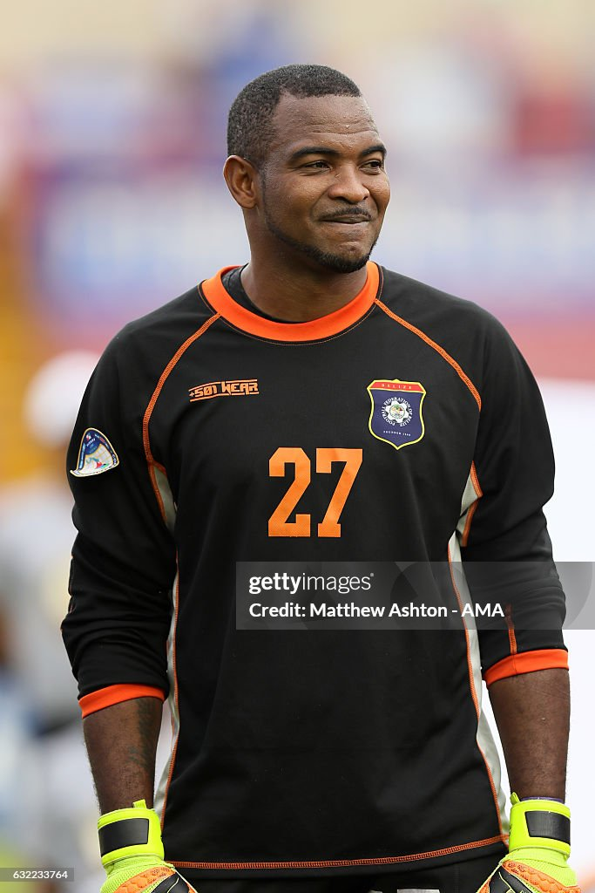
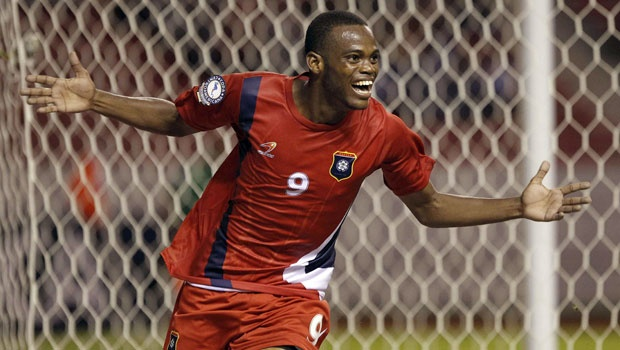

This is the Belizean mascot/logo for the Olympics
About Belize Hosting the Olympics
Belize can host the Olympics by teaming up with businesses and getting international sponsors for funding. Belize could partner with America and their sports companies such as Sketchers. Tourism businesses, hotels, and airlines like Hilton Hotels and American Airlines.
Belize's Olympic History
- 1968
- 1972
- 1976
- 1980
- 1984
- 1988
- 1992
- 1996
- 2000
- 2004
- 2008
- 2012
- 2016
- 2020
- 2024
Belizean Cuisine
Belize is known for its fresh seafood, grilled lobster is a local dish there. Tourists can eat and enjoy this meal along the coastline, lobster is mostly prepared with local spices with sides like rice and various different vegetables.

A Belizean meal. This dish has rice and beans cooked in coconut milk, served with stewed chicken. The mix of spices and coconut gives it a unique taste.

Why Host the Olympics in Belize?
- Nice weather
- Beautiful nature, landscape, and beaches
- Easy to get around the country
- Richness in Culture
- Helps Belize become a tourist country and helps them financially.
- Makes a historical moment in Belize and encourages people to improve in sports
- This experience would have a positive impact on the country and create memorable moments for the ones involved
- Because the annual is pretty low this means that tourists will not have to spend as much money.
- Food culture
Belizean Sports Icons
The most famous sportsman in Belize:
Shane Orio
Belizean former football player
Age: 43
Position: Goalkeeper
What he has succeeded:
Became the first-choice goalkeeper for the Belizean national team.
Took part in the World Cup qualifiers.
Deon McCauleyr
Belizean former football player
Age: 36
What he has succeeded:
He scored the first goal and first hat-trick of the 2014 FIFA World Cup qualifying campaign.
Belize's Top goalscorer
18 Goals for the Fifa World Cup qualifying and 2 goals in the 2007 UNCAF Nation Cup.
